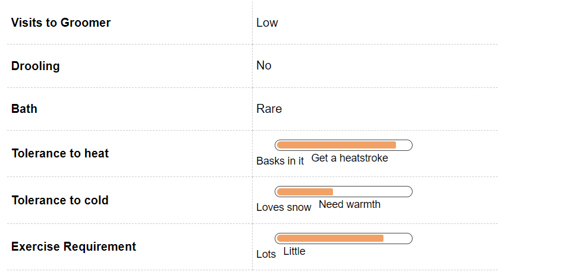
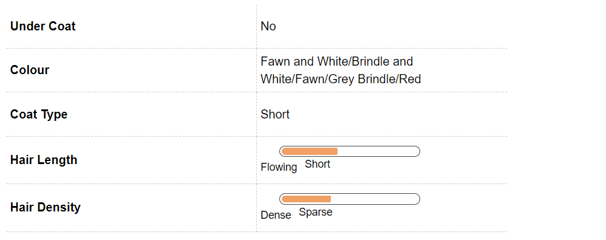
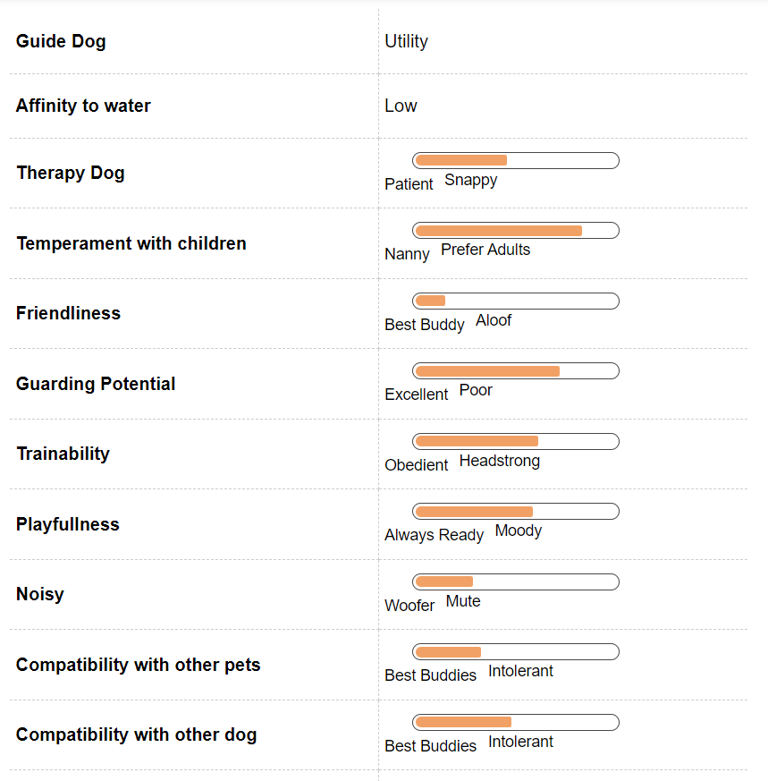
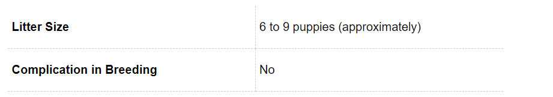
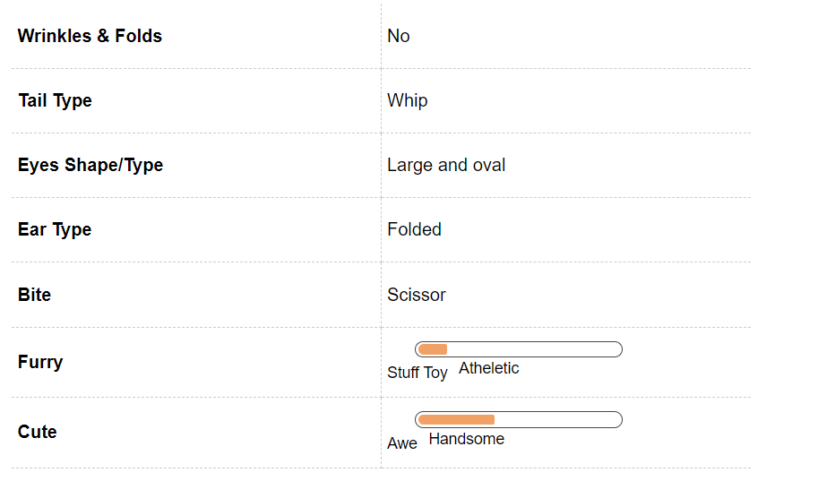

Rampur Hound Dog Breed Information
Introduction
We have been talking for a long time about the various dog breeds across the world and how they came into existence. There are many of us who are fascinated with the pedigree breeds abroad and then there are some who do not even know that Indian breeds its own thorough breds aka what we know as the pedigree breeds, which are not only majestic but can be fierce when it comes to protecting their owners.
The first look at the Rampur Hound and you will think that it a Greyhound. You are not the only one who has been confused by the breed. This in fact this breed has some Grey hound lineage but it is a breed that was developed in India. This is a breed that thrives on human companionship as well as other dogs. This pet will not have any adjustment issues. If you think that are the speedsters of the dog world and will not make good pets. Then you are in for a surprise these dogs are not very active in the house but a word of caution they are fiercely loyal to their owners and can even attack if required to help their owner.
Rampur Hounds do not have many health complications attached. Their lineage and breeding has made sure that they can combat the Indian weather conditions and maintain health. The added advantage of the breed it can thrive on Indian condition. We will help you to trace the origin of this breed and will help you know them better.
History
The Rampur Hound owes it origin as the name suggests in Rampur. The origin of the breed is dated back to the early 20th century under the reign if Royal Highness Ahmed Ali Khan Bahadur, the ruler of Rampur in the early 20th century. His intent was to create a fierce and agile breed with the intent of hunting wild boar which was a routine past time for the royal gentry. He interbred Tazis, Afghanis and English Greyhounds. The result was a fearless hunter that was intimidated by wild animals like jackals, lions, tigers and coyotes in addition to boar.
Unique Aspects
The most unique aspect of a Rampur Hound is its ability to see. This sight hound has amazing sight that helps to chase away rabbits and hares. All this is because of the position of their eyes. These hounds have a long elongated skull with a tapering muzzle. This helps to have a 270 degree field of vision. This is almost twice of what you and I can see. It would not be wrong to say that this hound can see behind its head also.
Fun Trivia

This majestic Indian breed does not have many contenders when it comes to featuring in movies or with celebrity. As soon as we find out of any we will update the section. Stay Tuned for that in this space
Vital Stats:
Dog Breed Group:
Hound Dogs
Height:
22-30 Inches
Weight:
27-30 Kg
Life Span:
13 to 14 years
Pros and Cons
| Pros |
Cons |
|
Excellent family pet |
Needs early socialization |
|
Adapts to all weather |
Needs regular exercise
|
|
Very less grooming requirements |
|
Rampur Hound Maintenance & Effort

Grooming
Rampur Hounds have short coat but do not be fooled by the length, they shed. You can brush them once or twice a week. They love being massaged so they will never complain if you rush them with a soft brush or a hound mitt.
In addition to this you will need to follow the regular grooming regime with your pet that is brushing the teeth of your Rampur Hound, this should be done at least once on a weekly basis as this will help to remove all tartar buildup and ensure a fresh breath at all times. This will also prevent various gum diseases in your pet.
The toe nails will also require clipping on regular basis so to prevent any problems further as dog nails have veins in them and if it gets chipped then it can be very painful for your pet. You should always start this grooming regime in your pet from an early age as this will ensure that he is not temperamental with someone touching his feet, mouth or ear at a later stage.
Rampur Hound Hair & Coat

Rampur Hound Health & Care
Common Health Issues
Rampur Hounds are generally a healthy breed but you have to remember when getting a puppy home that almost all and every breed has a chance of developing genetic disorders and they can also contract any of the common diseases. So this not a word of law these are some of the unfortunate cases that you can encounter with your Rampur Hound at times.
One of the most common problems in your Rampur Hound is of bloating. This is caused with the sudden influx of gas and air in the stomach. Though this is not fatal but should be treated early to avoid any complication later. This can also happen because of the twist in the stomach for this a surgery is required. This can also happen in cases where the dog is fed once a day. It is recommended that if your dog suffers from bloating then the meals should be broken into two to three meals a day rather the dog is fed once a day.
The other common problem with Rampur hounds is that they can easily develop skin sores; their athletic frame does not do well on hard floor. So it is very important to remember to provide soft bedding to your pet. In addition to this as most sight hounds the Rampur Hounds in general are sensitive to anesthesia. This can be specially related to the breeds low body fat percentage. This can becomes a problem when the pet needs to go through some surgery.
Rampur Hound Behavior

Temperament
Rampur Hound is good companion to have. It is friendly and will thrive on human companionship. This breed is known for its loyalty towards the family. In fact when the time requires they can be fiercely loyal towards the family. They are intelligent and devoted dogs. Though they can be a little reserved at times but do not take this as a sign of being unfriendly they are just shy to begin with. This is an even temperament dog that was meant to chase their prey so if you have smaller animals in the house ensure regular supervision and socialize early to prevent any unpleasant experiences.
Greyhounds are considered a one owner breed and can even charge at strangers in case it finds the situation threatening for the owner. These dogs are good with children but do not fare well with other small animals as pets. You have to remember that this athletic dog was bred to chase animals for hunting. They have a high energy requirement and will need regular exercise. They will thrive in a house with a yard but if keeping in an apartment remember to give them regular exercise.
Environment
Rampur Hound can adapted to any kind of living environment, whether an apartment or a house. This versatile breed can not only adapt but also thrives in these conditions. They do not bark much so they are perfect for the complaining neighbours as well. They just need time with the strangers and if not socialized properly can even attack them.
Rampur Hound can easily be housetrained. This is a great family pet but at times be difficult with young kids. You need to train him to listen to the command to come back to you as you can lose your dog if recall is not adhered to. If you have a yard then it is better to have picket fences around it.
Training & Intelligence
Training your Rampur Hound is fairly easy. They are not very difficult to housetrain also. They have average intelligence and because of the subtle nature are quick learners. Rampurs are essentially pack animals. So they will listen mostly to one person in the family whom they see as their master.
The most important thing to train your Rampur Hound is to train him to respond to recall. This breed is really fast and at times can meet with accidents if not trained well. You can inculcate the recall through a regular and consistent training module. It is also advisable to never take your greyhound without a leash as they might wander off easily.
Rampur Hound has to be trained to socialize with other animals especially smaller animals as they were developed to chase and he or she might either scare them away or just thing that they are prey.
Rampur Hound Breeding

Procreation
Rampur Hounds are generally a very healthy breed and there are not many complications attached to its breeding. The only hitch is that this breed does not respond well to anesthesia a common drug given while performing C section. This has to be kept in mind though that this is not very common. An average males and female Rampur Hound will attain sexual maturity anywhere between six to nine months of age. Though your pet may be is still a little young to breed.
A dog takes around 18 months to reach his or her full height and structure. It is advisable to breed your dogs after at least two years of age. If you are a first timer at breeding then taking a vet’s help is advisable. You just sit back and enjoy the company of six to eight adorable little puppies. An average litter size of the breed.
Puppies
The Rampur Hound puppies can be a handful because of their speed. There will be times when you will see your dog running on all fours. When you bring home this little bundle of joy always remember that this is super active dog. Be ready to run around this little pooch all day. You cannot leave them alone for long. They love company and can at times easily develop separation anxiety. These hounds are mostly one man dog so it is absolutely important to socialize them with various people and animals. These breeds were developed to be independent so socialization with people is essential as this may lead to problems later.
Rampur Hound Appearance

Body
As we mentioned earlier there is a startling resemblance between the Grey hound and Rampur Hound when it comes to looks. Their body is shaped quite similar to the English Greyhound ancestor, but much wider and more muscular. Their skull too is flatter and broader than a Greyhound with a pointed nose. Like other hounds, their chest is deep in front but not very wide. Their tail is long and carried low, but slightly curling upwards at the tip.